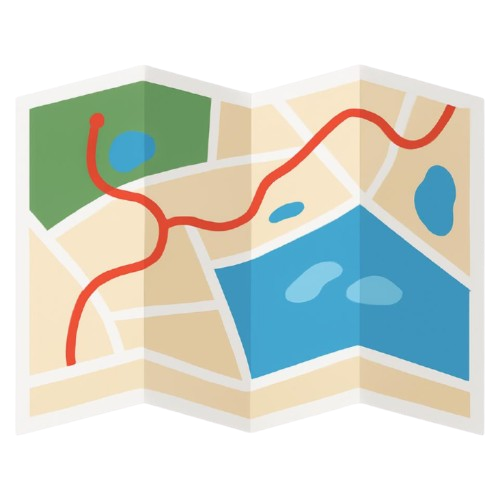

Hi, I'm Lamar Alshehri, a Software Engineering student at KFUPM with experience leading full-stack academic projects and building Java/JavaFX applications. Interested in scalable systems, backend development, and applying problem-solving skills in real-world engineering environments.
Designed and developed a web-based system to streamline university transportation coordination. Enabled request workflows for faculty and organizations, real-time schedule visibility for students, issue reporting, and administrative oversight of approvals and operations. Improved service transparency, reduced communication gaps, and supported efficient campus mobility.

Developed a JavaFX application to visualize student schedules, optimize walking routes across campus, and display real-time class data from an Excel file. I integrated Apache POI for Excel parsing and JavaFX for dynamic map rendering. I also Applied OOP principles (SRP, OCP) for scalable and maintainable design
A JavaFX application that provides an intuitive interface for managing horse racing data, supporting both admin and guest users with distinct functionalities. • Implemented real-time data querying and management for admins to add races, approve trainers, and handle race-related information • Developed a guest interface for browsing race statistics, winning trainers, and horses by owner, backed by a robust MySQL database